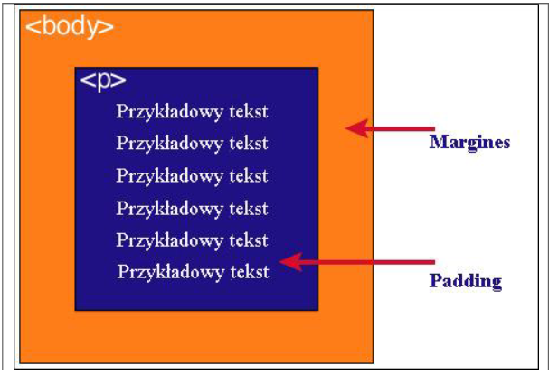

Każdy element w dokumencie HTML otacza się prostokątnym obszarem zwanym pudełkiem (ang. Box model). Pudełko składa się z kilku wartsw:
| Zawartość | Opis |
|---|---|
| content | Zawartość elementu (np.: tekst, obrazek) |
| padding | Otaczające marginesy wewnętrzne, odstęp między obramowaniem i zawartością elementu |
| border | Obramowania wokół zawartości elementu, ma styl i kolor |
| margin | Marginesy wokół ramki (margines zewnętrzny). Jest to pusty obszar wokół ramki, który nie ma koloru tła i jest przeźroczysty. |
1. Padding, border i margin mogą mieć zerową wartość.
2. Tło elementu jest określone dla wszystkich z podanych powyżej obszarów z wyjątkiem marginesów zewnętrznych, które zawsze są przeźroczyste (transparent)
Padding określa przestrzeń wokół danego elementu, np: <p> lub <div>, natomiast margines przestrzeń pomiędzy elementami.
Jak widać na rysunku, padding oznaczony jest kolorem niebieskim. Określa on wielkość przestrzeni wokół elementu <p>. Element ten posiada również margines zaznaczony kolorem pomarańczowym. Jest to odległość od brzegu elementu <body>.